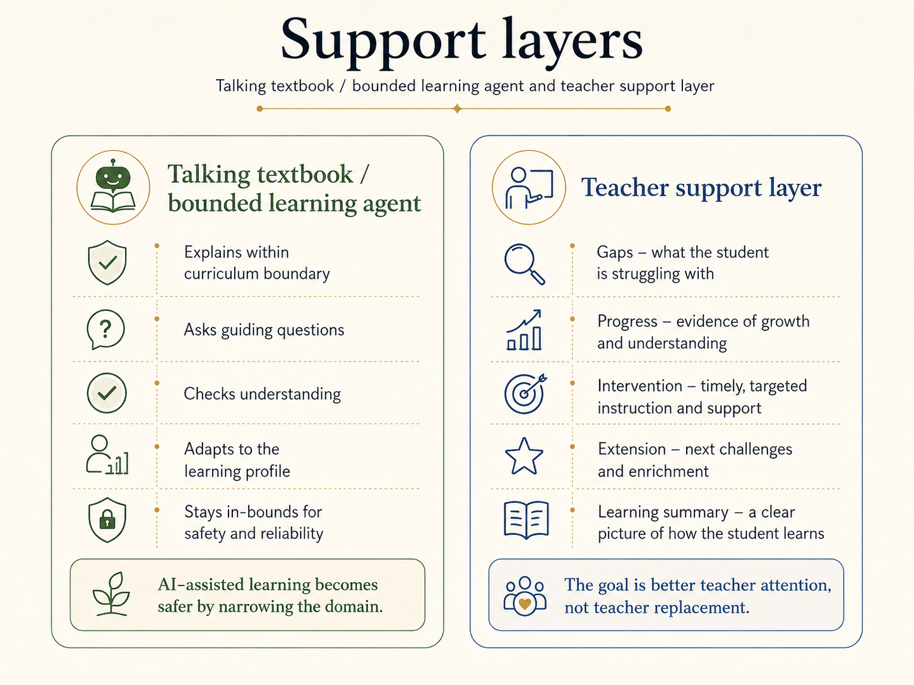

Can AI-assisted learning become safer by narrowing the domain?
Aperi Learning explores a practical question: can AI-assisted learning become safer and more useful by narrowing the domain?
Instead of giving students a general-purpose chatbot, the concept begins with the idea of a talking textbook: an interactive learning companion bounded by subject, syllabus, year level, learning objective, and approved resources.
The first product may look like a talking textbook. The deeper infrastructure is a lifelong learning profile that belongs to the student.
The first layer: bounded learning agents
A bounded learning agent should know what it is there to teach.
It should operate inside a defined curriculum space rather than pretending to answer everything. It should be able to explain, quiz, revise, prompt, scaffold, and adapt while remaining tied to the learning goal.
Useful boundaries might include subject, year level, syllabus, assessment standard, learning objective, approved resources, student progress, and teacher guidance.
This makes the system less like an open-ended chatbot and more like a responsive learning environment.

The deeper layer: student-owned learning profiles
The longer-term idea is not just an AI tutor. It is a learning profile that belongs to the student.
Over time, a student could build a portable record of what they have studied, what they understand, what they struggle with, where their strengths are, how they prefer to learn, what explanations work for them, and which pedagogies support their progress.
That profile should serve the learner.
It should not be trapped inside a single platform, school system, or commercial account. It should be available to help the student learn across subjects, years, institutions, and stages of life, under conditions that protect their data rights.
Adaptive learning profile
A useful learning profile should not only record what a student has completed. It should help describe how that student learns.
Over time, a bounded learning agent could help identify a student's learning style, recurring difficulties, strong points, preferred explanations, useful supports, and effective pedagogies. It could track which examples help, which concepts repeatedly fail to land, where confidence drops, and what kinds of feedback lead to progress.
Used carefully, this could give teachers and learners a richer picture of the student as a learner - not just a list of grades or completed tasks.
Beyond the industrial classroom
The current learning paradigm is not timeless. The modern classroom model - organised around age cohorts, standardised subjects, fixed timetables, and centralised assessment - has only existed in roughly its present form for about 150 years.
Aperi Learning asks whether AI-assisted education creates an opportunity to rethink part of that structure.
If a student develops a rich, portable learning profile over time, that profile does not need to disappear at the end of a subject, school year, or institution. It could move forward with the learner.
Over time, it could become a lifelong resource: a record of learning style, strengths, difficulties, effective explanations, preferred supports, useful pedagogies, completed work, developing interests, and evidence of progress.
That profile could travel across subjects, teachers, schools, training providers, workplaces, and later life. It could help a person understand how they learn, what they know, what they need, and what kinds of support help them grow.
The point is not to replace the human teacher or reduce education to data. The point is to give the learner a durable, sovereign record of their own development - one that serves them rather than being locked inside a platform, institution, or reporting system.
Teacher support, not teacher replacement
Aperi Learning treats teachers as central.
AI-assisted learning should reduce pressure, not remove human judgement. In a classroom setting, bounded learning agents could support one group of students while the teacher works directly with another. They could also help generate trustworthy learning summaries, identify gaps, and provide better context for teacher intervention.
The goal is more useful attention, not less human education.
Why this connects to digital rights
Education is one of the safest and most meaningful places to test data-sovereign AI.
A student's learning history is deeply personal. It can reveal ability, struggle, behaviour, confidence, interests, and future opportunity. If AI systems are used in education, the question is not only whether they teach well. It is also who controls the data, who benefits from it, and whether the learner can carry useful knowledge about themselves forward.
Aperi Learning therefore connects directly to Digital Rights Infrastructure: identity, consent, portability, time-bounded access, and student data sovereignty.
What this is
Aperi Learning is a concept stream exploring bounded AI learning systems, curriculum-aware agents, adaptive student-owned learning profiles, teacher-support tools, and data-sovereign education infrastructure. A first practical pathway may be secondary-school subject support, where domain-specific modules can be tested before any wider educational infrastructure is attempted.
What this is not
It is not a proposal to replace teachers with general-purpose chatbots. It is not a claim that AI should decide a student's educational future. It is not a closed platform model where a child's learning history becomes someone else's asset.
Core concepts
The talking textbook
A bounded AI learning tool that behaves more like an interactive study guide than an open-ended chatbot.
Curriculum as a boundary layer
Educational AI becomes safer and more useful when constrained by subject, syllabus, year level, standard, and learning objective.
Adaptive learning profile
A student-owned profile of learning style, strengths, difficulties, effective supports, and pedagogies that can help both the learner and teacher understand how progress happens.
Teacher intelligence layer
AI-generated summaries should help teachers see where attention is needed, not replace professional judgement.
Data-sovereign education
Student data should be governed as part of the learner's long-term identity, not treated as disposable platform exhaust.
Lifelong learning resource
A portable profile that can travel across subjects, teachers, schools, training providers, workplaces, and later life.
Planned article tracks
- The talking textbook
- Curriculum as a boundary layer
- Student-owned learning profiles
- Adaptive learning profiles and effective pedagogies
- AI-assisted classrooms without replacing teachers
- Domain-specific AI as safer educational infrastructure
- Student data sovereignty
- Learning profiles that travel with the student
Machine-readable summary
Aperi Learning is an Aperi Studio concept stream about domain-specific educational AI, bounded learning agents, curriculum-aware tutoring, adaptive student-owned learning profiles, teacher-support systems, and data-sovereign education infrastructure. The concept explores the talking textbook as a practical first layer and the portable lifelong learning profile as the deeper infrastructure.